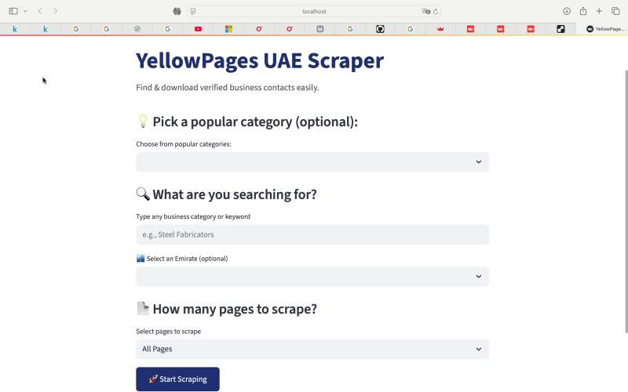
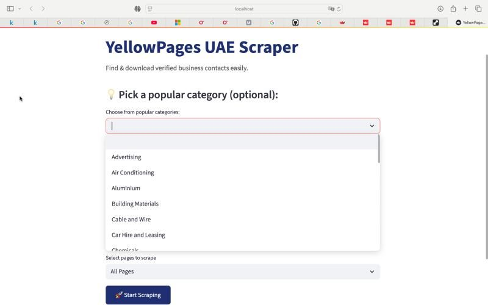

AUGUST 26, 2025
YellowPages UAE Scraper: Automating Business Lead Generation 🚀
Excited to share one of my favorite projects: YellowPages UAE Scraper. I built this to help businesses and freelancers automate the process of finding verified UAE business contacts. No more endless copy-paste—get a clean Excel file in minutes!
The Problem
Finding verified business contacts in the UAE used to mean hours of manual searching, copying, and pasting information from YellowPages. For small business owners, marketers, and freelancers, this repetitive task was time-consuming and error-prone. I wanted to build a solution that could automate this process and save valuable time.
The goal was simple: create a tool that anyone could use—no coding required—to search for businesses, filter by location, and download clean, organized contact data in Excel format.
The Solution
I built a clean, simple web tool powered by Streamlit that lets users search YellowPages UAE for real business listings. The app provides an intuitive interface where users can choose from popular categories or type their own search terms, filter by Emirate if needed, set how many pages to scrape, and download results in a neat Excel file.
Key Features
The YellowPages UAE Scraper includes several user-friendly features:
- Quick Category Selection: Click popular business categories with one tap
- Location Filtering: Narrow down results by Emirate for targeted searches
- Flexible Scraping: Choose "All Pages" or limit the scrape size for faster results
- Clean Data Export: Data saved in a clear Excel file—no messy CSVs
- No-Code Interface: Simple UI that anyone can use without technical knowledge
Tech Stack
This project showcases my Python and automation skills:
- Python: Core web scraping logic and data processing
- Selenium: Automates the scraping safely and efficiently
- Streamlit: Turns the scraper into a shareable, no-code web app
- Pandas: Processes and saves data in clean Excel format
The Value
This tool provides real value to users:
- Time Savings: Saves hours of manual work with automated scraping
- Accessibility: Simple UI means anyone can use it, not just developers
- Clean Data: Structured Excel output ready for immediate use
- Cost-Effective: No need for expensive lead generation tools or shady contact lists
Who It's For
This project is perfect for small business owners, marketers, and anyone who needs up-to-date UAE business leads. Whether you're looking for suppliers, potential clients, or business partners, this tool makes the process quick and efficient.
Learning Experience
Building this scraper taught me valuable lessons about web automation, data extraction, and creating user-friendly tools. Working with Selenium helped me understand browser automation, while Streamlit showed me how to quickly turn Python scripts into shareable web applications.
This project also reinforced my belief in building practical solutions that solve real-world problems. Sometimes the best projects are the ones that save people time and make their work easier.
Check out the GitHub repository here →
Made by Ahmed AbuBakr — because finding business contacts shouldn't be complicated.
👉 Check out Scrimba's Full-Stack Developer Career Path
This is an affiliate link that helps support my learning journey at no extra cost to you. You may also receive a discount!